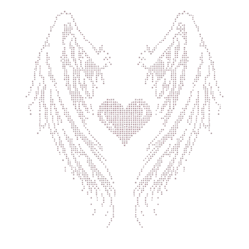

Self-care Toolbox
一组简单、安静的生活小工具，给需要精神状态管理的人。不用注册，打开就能用。
🌙
睡眠时间轴
记录入睡、起床、睡眠质量和梦，按日 / 周 / 月 / 年查看作息规律
更多小工具会慢慢加上
🔒 隐私：数据默认只保存在你自己的浏览器里。开启可选的多端同步后，数据会先在你的设备上加密再上传，服务器和开发者都看不到内容。没开同步时，换设备或清除浏览器数据会丢失记录，请定期用工具里的「复制全部数据」备份。
⚠️ 请注意：这些工具只用来自我记录和整理生活，不能代替医生、心理咨询师或任何专业治疗。